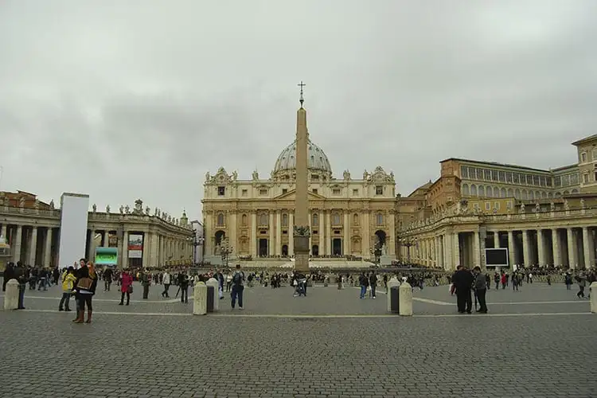

Torre Eiffel, em Paris
Um dos monumentos mais emblemáticos e reconhecidos mundialmente, a Torre Eiffel é um dos maiores símbolos de Paris e da França como um todo. Sua história remonta ao final do século XIX, especificamente aos anos de 1887 a 1889, quando foi construída para ser a peça central da Exposição Universal de Paris, um evento que celebrava o centenário da Revolução Francesa.
A torre foi objeto de críticas, debates e polêmicas ao longo do tempo. Mas resistiu, com seus 300 metros e mais de 7 mil toneladas, sendo também acompanhada por muitos admiradores. Tornou-se o que se tornou: um marco na história da arquitetura e do design por sua grandiosidade e técnica e, posteriormente, um ícone cultural.
Coliseu, em Roma

Sangue à parte, o oficialmente chamado Anfiteatro Flaviano foi inaugurado no ano 80 d.C. e conseguia acomodar mais de 50 mil espectadores.
Com quatro andares distribuídos entre colunas, hoje o monumento é mais do que uma atração turística que atrai milhões de visitantes todos os anos, mas um símbolo do legado cultural e histórico de Roma e exemplar ainda vivo das avançadas técnicas de engenharia e design de uma época.
Museus do Vaticano, no Vaticano
Embora seja sede da Igreja Católica e um marco religioso, o Vaticano é um dos principais pontos turísticos na Europa também por ser um local de grande importância cultural e artística.
De fora, a magnífica Basílica de São Pedro, construída no século IV e reconstruída no século XVI, representa a fachada de um dos locais mais sagrados do cristianismo — de onde papas fizeram discursos com multidões de devotos atentos na praça de São Pedro ao longo dos anos e uma obra-prima da arquitetura renascentista.
Com peças que vão desde a antiguidade egípcia, grega e romana até obras-primas do Renascimento, os museus do Vaticano guardam uma das maiores coleções de arte do mundo.
Cada sala e corredor é uma cápsula do tempo, mas ouso chamar a atenção para uma única obra que já faz valer toda a visita, embora tudo impressione. É a Capela Sistina, de Michelangelo, uma experiência que só posso definir de uma forma: faz jus à fama.